Definitions
Wavelength = wavelength of the incident light
D = diameter of the aperture (or obstacle)
z = distance from the aperture plane to the observation plane
NF = D2/(4*Wavelength*z), Fresnel Number.
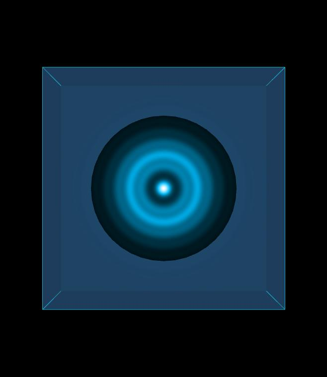
Image 1
Circular aperture, Wavelength = 450 nm, D = 0.600 mm, z = 66.67 mm, NF = 3.00.
To download the high resolution image, copy the following link into your
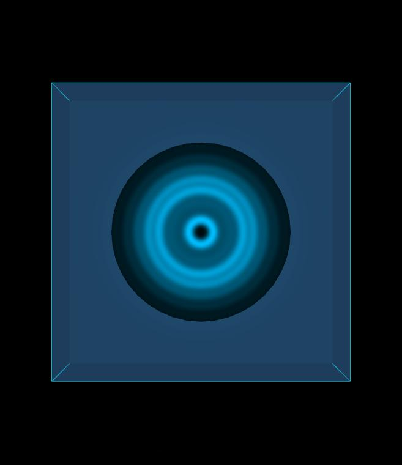
Image 2
Circular aperture, Wavelength = 450 nm, D = 0.600 mm, z = 50.00 mm, NF = 4.00.
To download the high resolution image, copy the following link into your
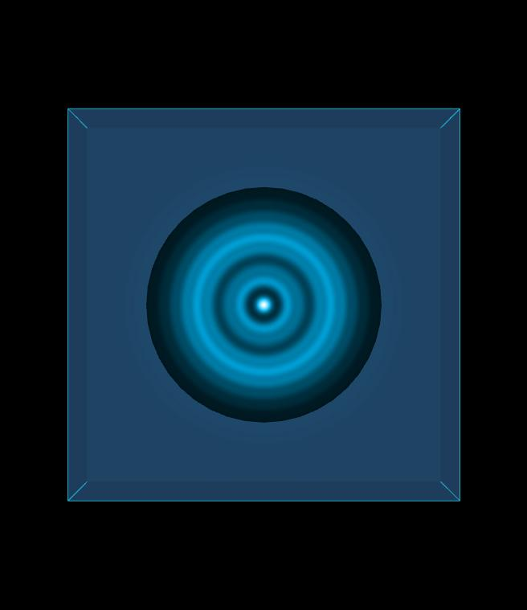
Image 3
Circular aperture, Wavelength = 450 nm, D = 0.600 mm, z = 40.00 mm, NF = 5.00.
To download the high resolution image, copy the following link into your
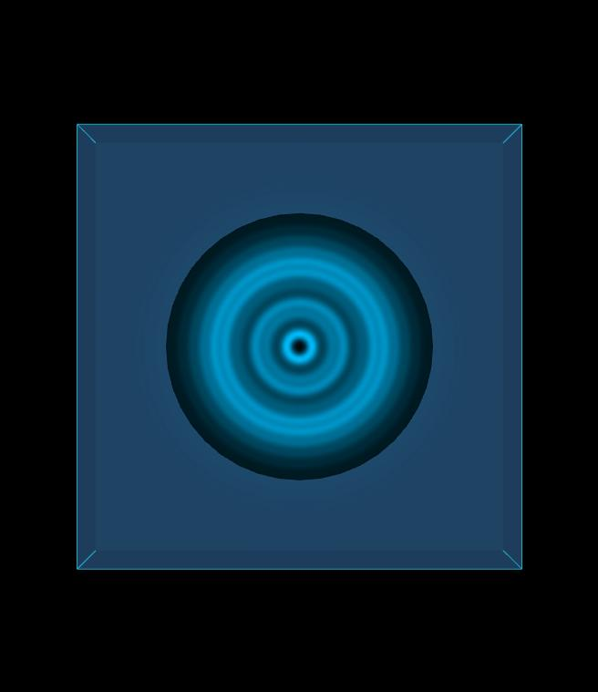
Image 4
Circular aperture, Wavelength = 450 nm, D = 0.600 mm, z = 28.57 mm, NF = 6.00.
To download the high resolution image, copy the following link into your
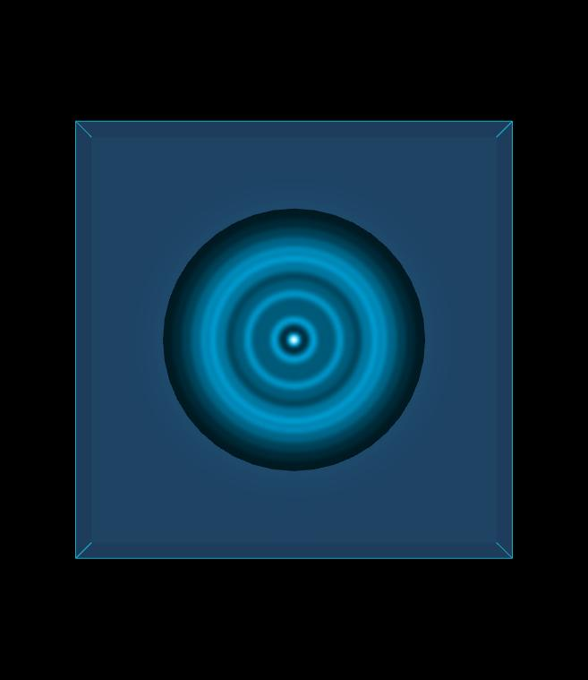
Image 5
Circular aperture, Wavelength = 450 nm, D = 0.600 mm, z = 50.0 mm, NF = 7.00.
To download the high resolution image, copy the following link into your
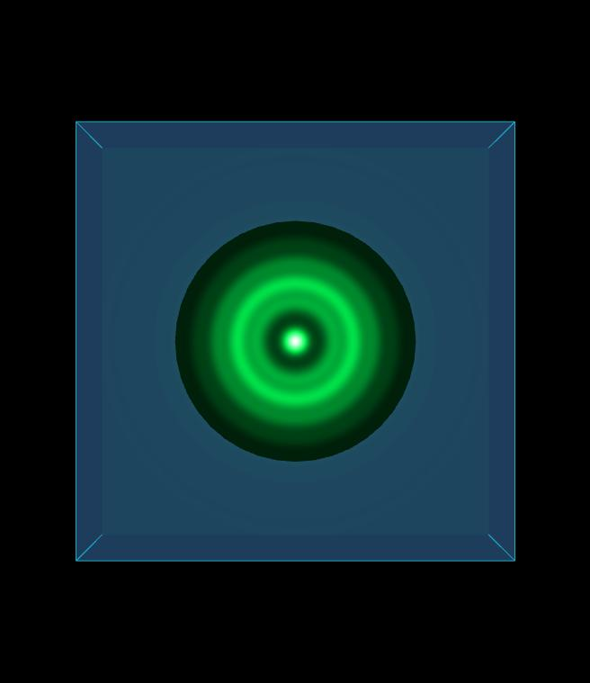
Image 6
Circular aperture, Wavelength = 500 nm, D = 0.5480 mm, z = 50.0 mm, NF = 3.00.
To download the high resolution image, copy the following link into your
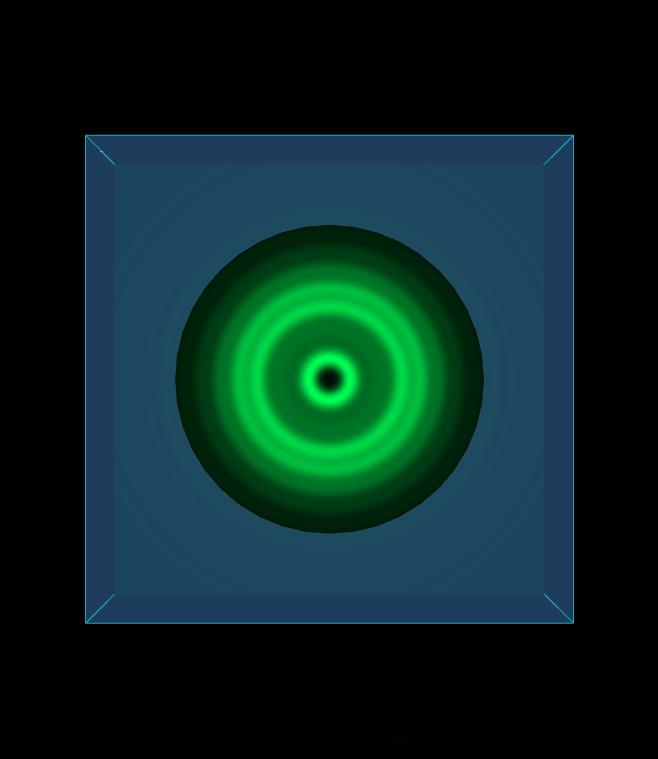
Image 7
Circular aperture, Wavelength = 500 nm, D = 0.6325 mm, z = 50.0 mm, NF = 4.00.
To download the high resolution image, copy the following link into your
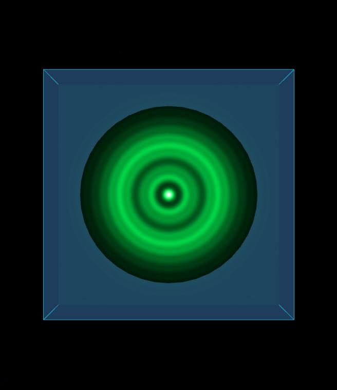
Image 8
Circular aperture, Wavelength = 500 nm, D = 0.7071 mm, z = 50.0 mm, NF = 5.00.
To download the high resolution image, copy the following link into your
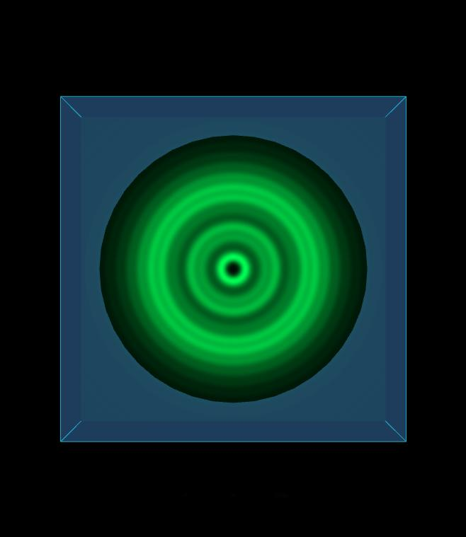
Image 9
Circular aperture, Wavelength = 500 nm, D = 0.7746 mm, z = 50.0 mm, NF = 6.00.
To download the high resolution image, copy the following link into your
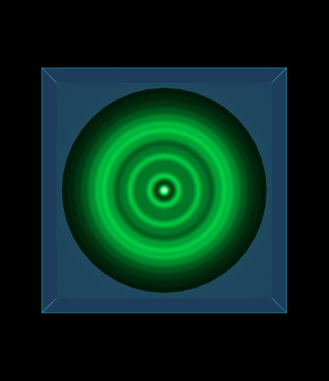
Image 10
Circular aperture, Wavelength = 500 nm, D = 0.8367 mm, z = 50.0 mm, NF = 7.00.
To download the high resolution image, copy the following link into your
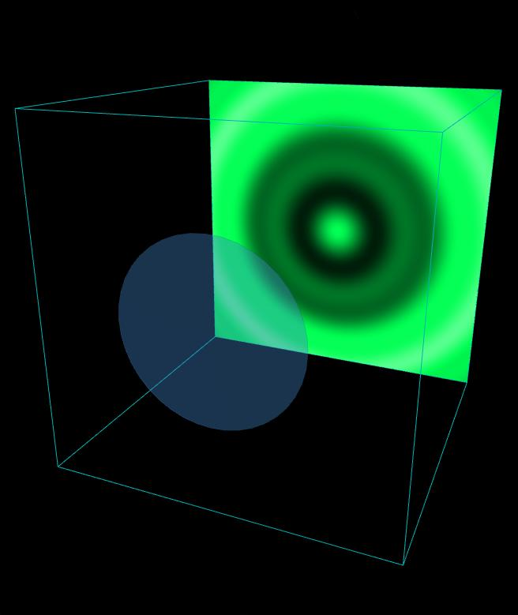
Image 11
Circular obstacle, Wavelength = 500 nm, D = 0.500 mm, z = 200 mm, NF = 0.625.
To download the high resolution image, copy the following link into your
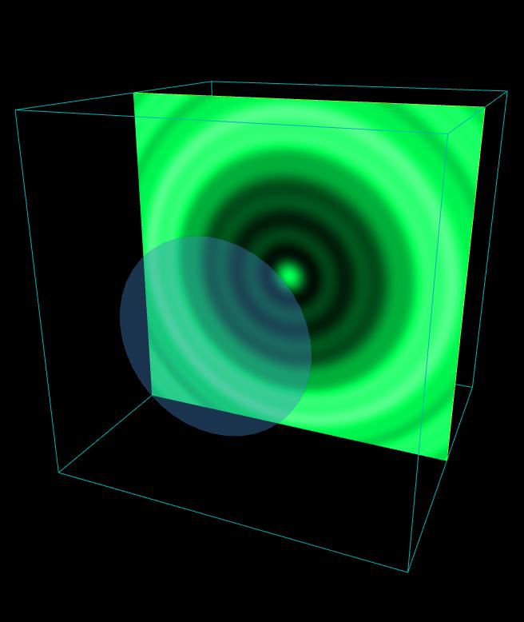
Image 12
Circular obstacle, Wavelength = 500 nm, D = 0.500 mm, z = 100 mm, NF = 1.25.
To download the high resolution image, copy the following link into your
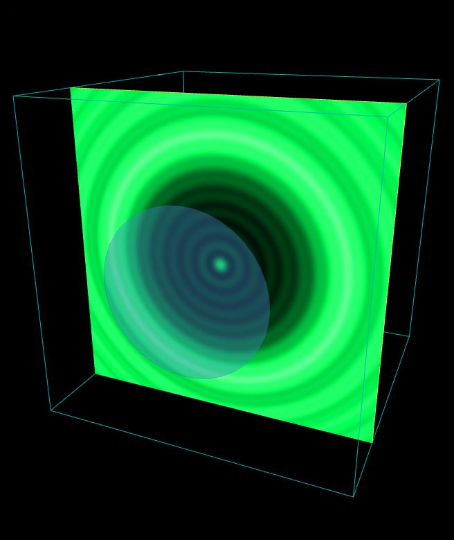
Image 13
Circular obstacle, Wavelength = 500 nm, D = 0.500 mm, z = 50.0 mm, NF = 2.50.
To download the high resolution image, copy the following link into your
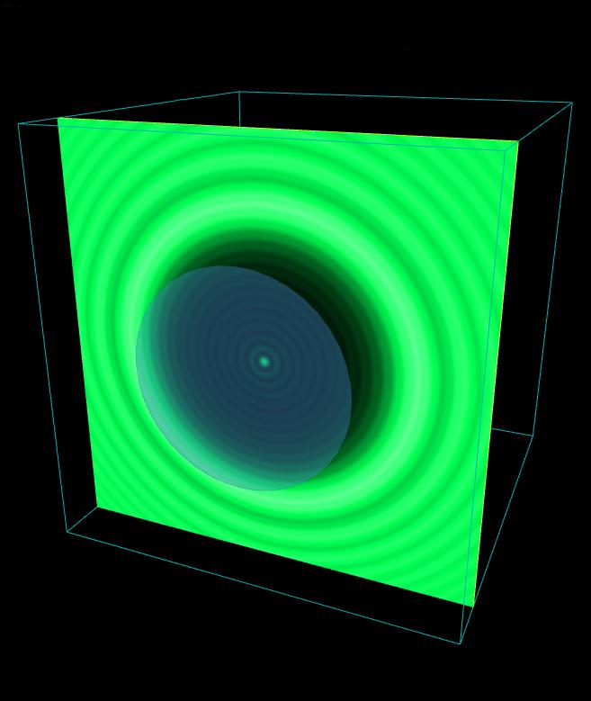
Image 14
Circular obstacle, Wavelength = 500 nm, D = 0.500 mm, z = 25.0 mm, NF = 5.00.
To download the high resolution image, copy the following link into your
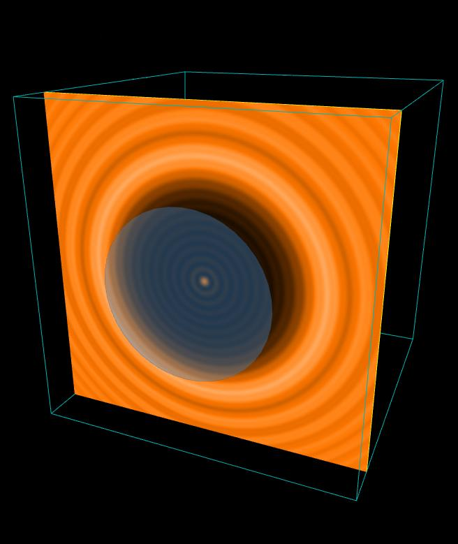
Image 15
Circular obstacle, Wavelength = 600 nm, D = 0.500 mm, z = 25.0 mm, NF = 4.17.
To download the high resolution image, copy the following link into your
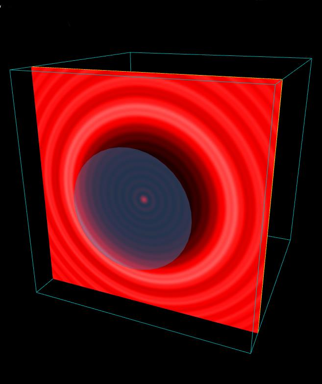
Image 16
Circular obstacle, Wavelength = 700 nm, D = 0.500 mm, z = 25.0 mm, NF = 3.57.
To download the high resolution image, copy the following link into your